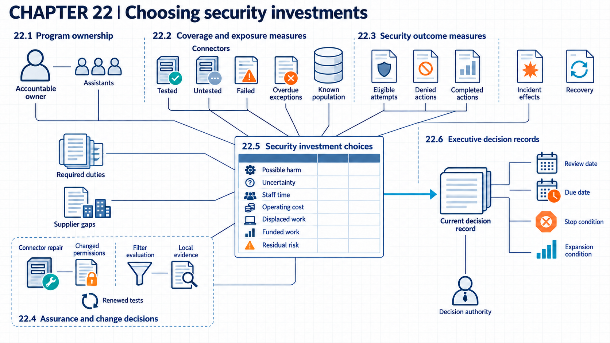

22 Prioritizing security investment
An investment decision connects measures, evidence, responsible owners, review dates, and remaining risk to staff, money, and time.
Security investment decisions allocate limited money and staff among competing needs. A completed review shows that work occurred, but deciding what to fund also requires evidence about exposure, possible harm, and what a proposed control could change. Required duties set constraints on that choice. Optional work can then be compared by likely benefit, cost, uncertainty, and the work it displaces.
Suppose an organization operates several AI uses with different data, permissions, suppliers, consequences, and evidence quality. Leaders cannot fund every proposed control at once. Assurance, monitoring, deployment, adoption, and responsibility work all compete for the same limited budget and people. To choose well, leaders need measures of exposure, outcomes, uncertainty, and control cost.

22.1 Security decision authority
A register full of risks and controls does not create a decision. Each asset, use case, exception, escalation, and review needs a person with authority to act. An accountable owner can accept or escalate a result. The same person can require more work before deciding.
CSF 2.01 places accountability with organizational leadership. It calls for cybersecurity roles, responsibilities, and authorities to be established, understood, and enforced, with resources allocated in line with risk strategy. These outcomes do not select one organization chart.
The program record connects each owner to a decision and a review rule. A technical lead may be responsible for producing and explaining test results, while the Chief Security Officer decides when an unresolved risk requires escalation. An executive may have authority for risk acceptance, which records a decision to retain specified residual risk. The record states the boundary instead of treating “ownership” as a vague label. These assignments give each coverage measure a reader and a purpose.
The governance workflow checks each active system, exception, escalation, and risk decision for an authorized role and a current review rule. The rule sets a review frequency, an interval or event rule for reassessment. The workflow blocks expansion or risk acceptance when either is missing. Coverage is complete assignments divided by all active decision records. A complete register does not show that the selected control is effective. Informal approval or an incomplete inventory can bypass the workflow, and recovery pauses the affected decision and escalates it to the correct authority. Updating the register and settling authority conflicts take review time and some governance tooling.
22.2 Measuring control coverage
A count such as “twenty systems reviewed” has no clear meaning without the total population. A coverage measure combines a numerator with the full population that the count is meant to represent. Examples include reviewed high-impact systems divided by all known high-impact systems, or tested sensitive connectors divided by all sensitive connectors in the inventory.
NIST2 distinguishes measures showing progress in putting controls in place from effectiveness, efficiency, and impact measures. NIST3 also states that the source, collection method, and validation process for measurement data need definition so results can be repeated and compared over time. Repeatable data does not make an irrelevant measure useful, and high control coverage does not establish control effectiveness.
The mechanism starts with an inventory and a clear denominator. The measure records missing items, exclusions, stale records, and overdue exceptions instead of silently dropping them. An overdue exception is an approved deviation whose review or expiry date has passed. A result of 90 tested connectors out of 100 known connectors shows 90 percent coverage. It says nothing yet about the ten untested connectors or the quality of the tests. Outcome measures, described in the next section, address that different question. Chapter 20 (Shadow AI and unmanaged use) provides the inventory method that supplies the denominator.
Coverage decision. The reporting service checks connector inventory status, test date, result, exception, and expiry. The denominator includes every known connector in scope, including failed, untested, and excepted items. Against a stated threshold, the responsible role continues, restricts, or pauses use. Unknown connectors and stale inventories can inflate the rate. When they are found, recovery adds the missing items and tests the unresolved population before the decision is reissued. Discovery, inventory tooling, and regular refreshes are the main running costs.
22.3 Security outcomes versus activity
Completion counts describe work performed, not what that work changed. An outcome measure observes the result a control is meant to change.
NIST4 describes effectiveness measures as evidence of how well controls meet desired outcomes. Efficiency measures show the speed of useful feedback and correction, and impact measures show effects on mission, cost, value, penalties, or trust. NIST5 also states that one measure may be insufficient for a risk decision and that resource limits prevent measuring everything. These categories do not supply AI-specific measures or establish that a control caused an observed change.
Every result reports its denominator. A rate divides an event count by a relevant exposure or opportunity count. A harmful-action count has a different meaning across one hundred eligible action attempts than across one million. The measure must state whether it includes denied attempts, completed actions, or both. Prevented attempts, duplicate events, incomplete reports, and changed exposure can also alter the rate. The denominators below are design choices for the example, not validated measures supplied by these sources. They need checking against the actual logging and decision process before operational use. Suppose the records show 4 harmful completed actions in 1,000 eligible attempts in one month and 8 in 4,000 the next. The rates are 0.4 percent and 0.2 percent. The count doubled while the rate halved. Neither comparison alone shows that a control improved: task mix, reporting, and attacker activity may have changed. The measured outcomes then inform renewed assessment and change decisions, as defined in Chapter 14 (Evidence for release decisions) and observed in Chapter 15 (Live monitoring and operating limits).
Outcome control. The measurement pipeline joins action, denial, incident, recovery, and exposure records for the same period and configuration. It reports harmful completed actions over all eligible action attempts, plus missing or duplicate records. Recovery records also give recovery time, the elapsed time from a specified disruption point to a specified restored state. A threshold can trigger restriction or renewed testing. A changed rate does not by itself prove that one control caused the change. Logging gaps can hide failures. When a gap is found, the team repairs the data path and recomputes the measure, and earlier decisions stay uncertain until review. Logging infrastructure, analyst time, and time to triage add cost.
22.4 Review triggers for approvals
An approval is tied to the system and evidence that existed at the time. A material change is large enough to invalidate an assumption, test, approval, or duty.
CSF 2.06 calls for improvements to be identified from evaluations, security tests and exercises, operational work, and incident planning. NIST’s generative AI profile7 recommends renewed model risk review after fine-tuning or adaptation to a new domain. These sources identify triggers but do not set a universal release threshold or prove that a proposed improvement works. Each organization sets its own release condition, an evidence threshold required before deployment or expansion.
The decision record links each trigger to stale evidence and the required renewed assessment, which repeats review after a trigger. It also identifies the authority that can pause or expand use. A minor interface change may need a focused regression test. A new action permission may reopen the threat model and authorization tests. It may also require a new incident plan and legal review, as assigned in Chapter 21 (Responsibility and legal duties). These decisions give investment planning options that rest on evidence.
Change gate. The release service checks the component version, permission change, supplier notice, affected assumptions, required tests, and decision authority. It permits the change, permits it with limits, or keeps the prior version. The measure is reviewed material changes divided by all detected material changes, with failed tests kept in the count. Silent supplier changes and untracked configuration can bypass the gate. Recovery restores the accepted version and repeats affected tests. Passing those tests supports only the changed paths and cases they cover. Review, duplicate environments, and retesting raise the running cost.
22.5 Comparing security investments
Exposure alone gives an incomplete priority. A priority decision uses business value, possible harm, and uncertainty. Control cost, legal duty, and displaced work also affect it. Expected loss is a probability-weighted estimate of adverse impact, but rare AI events may leave both probability and impact highly uncertain.
NIST8 says measurement priorities can consider risk strategy, mission, data availability, asset value, control cost, partial controls, risk assessments, policy, and legal requirements. NIST9 also says likelihood and impact need to be considered together because either alone is insufficient for deciding the importance of a potential measure. The guidance does not provide a universal scoring formula or validate probability estimates for rare events.
The decision can use ranges and scenarios when point estimates would imply false precision. A control required by law may remain mandatory even when its expected-loss estimate is small. A cheap control with broad benefit may receive priority over a costly control aimed at a narrow, uncertain scenario. The selected priorities and their uncertainty need a lasting executive record.
Example
Investment comparison. The example organization has 180,000 currency units and two optional projects after funding its required controls. Project A limits connector permissions for six assistants. It costs 110,000 in budget and needs two engineers for three weeks and three review days. It addresses a tested path that reached restricted records in 4 of 200 adversarial cases (2 percent of this constructed test set, which does not estimate the production failure rate). Project B adds a model-behavior filter to one public assistant. It costs 150,000, needs one engineer for four weeks plus ongoing tuning time, and addresses a plausible misuse scenario for which no local rate is yet available. These exercise values support only the comparison and do not measure control effectiveness.
The intermediate decision record compares affected systems, observed evidence, possible harm, delivery cost in money, staff, and time, displaced work, and uncertainty. The displaced work is the opportunity cost, the value of work displaced by the selected investment. Assume the connector path in A can expose confidential customer records in systems still needed for support, while the risky capability addressed by B remains disabled on the public assistant during evaluation. The temporary restriction on B is verified and can remain in place while the team gathers evidence. Under the exercise decision rule, an active tested disclosure path takes priority over enabling a currently restricted capability. Project A therefore receives priority. Broader coverage and more evidence alone would not establish that order. If the restriction on B fails or evidence shows imminent serious harm despite it, the team suspends the affected service and reopens the priority decision. A focused evaluation of Project B would measure the path and the filter under actual application conditions, as described in Chapter 14 (Evidence for release decisions). For this exercise, the available staff capacity is eight engineer-weeks plus three specialist review days. Project A uses six engineer-weeks and the three review days. The current decision therefore funds A and reserves the remaining 70,000 currency units and two engineer-weeks for the focused test and other unresolved work. A legal duty from Chapter 21 or stronger evidence could change the order.
The portfolio review board makes this comparison for every option. It checks affected systems, required duty, evidence quality, cost range, displaced work, bypass risk, and recovery benefit. It then funds, postpones, or rejects the option and records the condition that reopens it. Coverage is funded required controls over all required controls, while optional work keeps its uncertainty range. Optimistic estimates or missing systems can distort the order. The ranking also does not establish that the funded control will achieve its expected effect. To allow for that, the board reserves capacity for newly observed failures and repeats the comparison when a condition changes. The analysis costs analyst hours, and delayed projects tie up budget and lose time.
22.6 Executive decision review
A funding, expansion, pause, or acceptance decision needs enough context to be reviewed after staff, suppliers, or evidence change. Residual risk is the risk remaining after the selected measures.
NIST measurement guidance10 says a report can state the indicated risk and its fit with risk appetite. The report can also identify the needed decision and compliance concerns. It can record audit effects separately. CSF 2.011 calls for oversight results to adjust strategy and for risk responses to be selected, prioritized, tracked, and communicated. Legal and organizational authority determine who may accept a specific risk.
A decision condition is an event or threshold that changes an approval. Expansion may depend on completing permission tests and resolving two critical supplier gaps. A due date sets the date by which an action or review is expected. It keeps a temporary exception from becoming permanent through neglect. Teams can reuse the record and its reasoning in the sector cases in Chapter 23 (Adapting controls across sectors) and the whole-system review in Chapter 25 (Capstone: defending a system decision).
Example
Executive record trace. The decision record for Project A names the Chief Security Officer as the decision role and lists the six affected assistants. It records the 4 of 200 constructed-test result without treating it as a production rate, the 110,000 exercise cost, two engineers for three weeks, and three review days. It also records the remaining risk from untested connectors. It approves the work for the six systems and requires a repeated authorization test before expansion. The application team is responsible for delivery by 30 November. A new action connector or a failed regression test pauses expansion and returns the decision for review. The observed output is a conditional funding decision that another reviewer can reconstruct from its inputs and limits.
The executive decision workflow checks every such record before approval. It looks for the responsible authority, evidence date, scope, cost, due date, residual risk, and stop condition, and rejects a record that lacks any of them. Quality is reconstructable decisions divided by all consequential decisions reviewed in the period. A record that can be rebuilt shows how the judgment was made, not that it was the best one. Decisions made outside the record or on stale evidence can bypass the check. Recovery suspends the affected approval and returns it to the stated role. Preparation and challenge sessions take leadership and technical time.
Note
Chapter checkpoint. Project A uses 110,000 of the 180,000 currency-unit budget, leaving 70,000. Project B costs 150,000. A proposal claims that cancelling the reserved test would allow both projects to be funded. Does the budget support that claim, and does the current evidence justify moving B ahead of A?
Answer. No. A and B together cost 260,000, which exceeds the budget by 80,000 even if no money is spent on the test. Funding B would require postponing A, changing scope, or obtaining more money and checking staff capacity again. Higher possible harm matters, but the present record lacks local exposure and effectiveness evidence for B. With B’s risky capability still disabled and the restriction verified, the example supports funding A and gathering that evidence while keeping required controls funded. A newly identified duty, imminent harm, or stronger evidence could change the priority.
Cherilyn Pascoe, Stephen Quinn, and Karen Scarfone, The NIST Cybersecurity Framework (CSF) 2.0, NIST CSWP 29 (2024), Appendix A, GV.RR-01 through GV.RR-03, printed p. 17, source.↩︎
Katherine Schroeder, Hung Trinh, and Victoria Yan Pillitteri, Measurement Guide for Information Security: Volume 1, Identifying and Selecting Measures, NIST SP 800-55v1 (2024), sections 3.3.1–3.3.4, printed pp. 17–18, source.↩︎
Katherine Schroeder, Hung Trinh, and Victoria Yan Pillitteri, Measurement Guide for Information Security: Volume 1, Identifying and Selecting Measures, NIST SP 800-55v1 (2024), section 3.1.4, “Data Quality,” printed p. 15, source.↩︎
Katherine Schroeder, Hung Trinh, and Victoria Yan Pillitteri, Measurement Guide for Information Security: Volume 1, Identifying and Selecting Measures, NIST SP 800-55v1 (2024), sections 3.3.2–3.3.4, printed pp. 17–18, source.↩︎
Katherine Schroeder, Hung Trinh, and Victoria Yan Pillitteri, Measurement Guide for Information Security: Volume 1, Identifying and Selecting Measures, NIST SP 800-55v1 (2024), section 2.1, printed p. 4, source.↩︎
Cherilyn Pascoe, Stephen Quinn, and Karen Scarfone, The NIST Cybersecurity Framework (CSF) 2.0, NIST CSWP 29 (2024), Appendix A, ID.IM-01 through ID.IM-04, printed p. 19, source.↩︎
NIST, Artificial Intelligence Risk Management Framework: Generative Artificial Intelligence Profile, NIST AI 600-1 (2024), MAP 4.1, actions MP-4.1-007 and MP-4.1-008, printed p. 26, source.↩︎
Katherine Schroeder, Hung Trinh, and Victoria Yan Pillitteri, Measurement Guide for Information Security: Volume 1, Identifying and Selecting Measures, NIST SP 800-55v1 (2024), section 4.3, “Prioritizing Measures,” printed p. 21, source.↩︎
Katherine Schroeder, Hung Trinh, and Victoria Yan Pillitteri, Measurement Guide for Information Security: Volume 1, Identifying and Selecting Measures, NIST SP 800-55v1 (2024), section 4.3.1, “Likelihood and Impact Modeling,” printed p. 21, source.↩︎
Katherine Schroeder, Hung Trinh, and Victoria Yan Pillitteri, Measurement Guide for Information Security: Volume 1, Identifying and Selecting Measures, NIST SP 800-55v1 (2024), section 3.1.2, “Measurement Reporting,” printed p. 14, source.↩︎
Cherilyn Pascoe, Stephen Quinn, and Karen Scarfone, The NIST Cybersecurity Framework (CSF) 2.0, NIST CSWP 29 (2024), Appendix A, GV.OV-01 through GV.OV-03, printed p. 17, and ID.RA-06, p. 19, source.↩︎